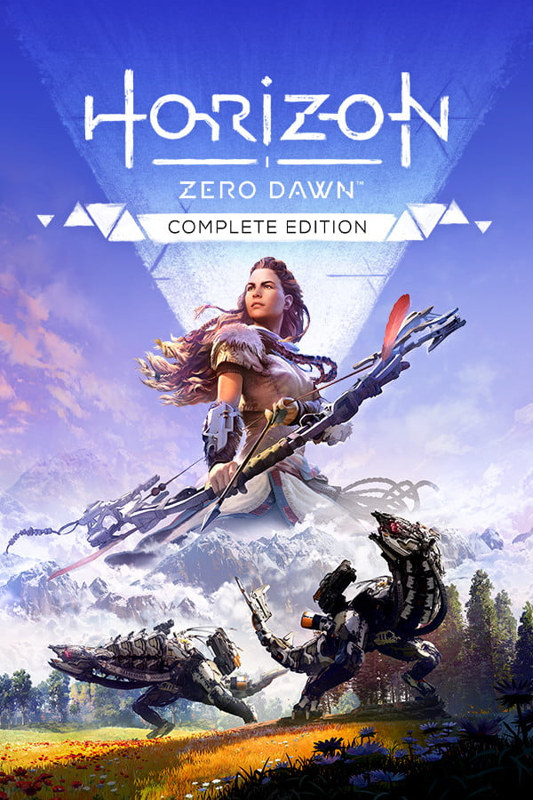
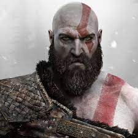
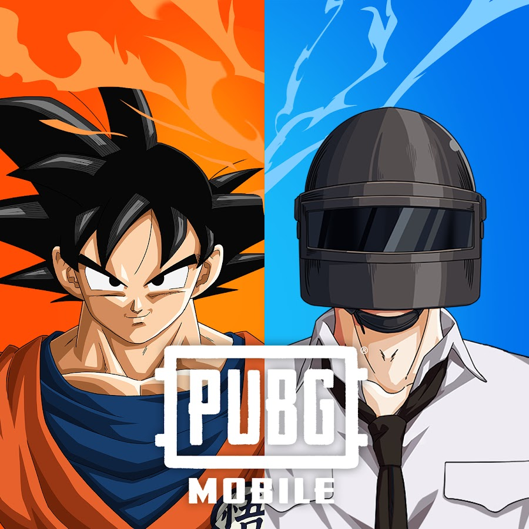
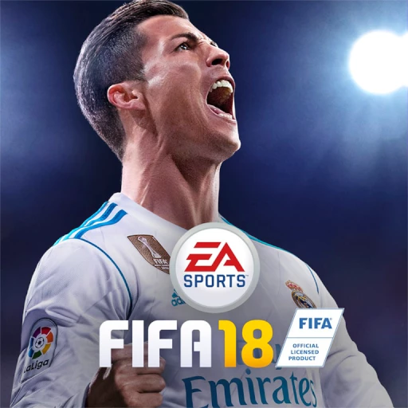
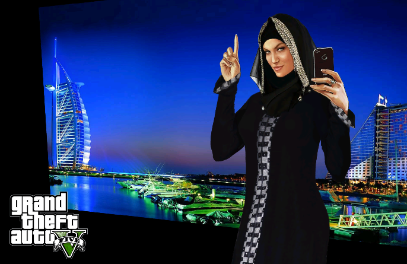
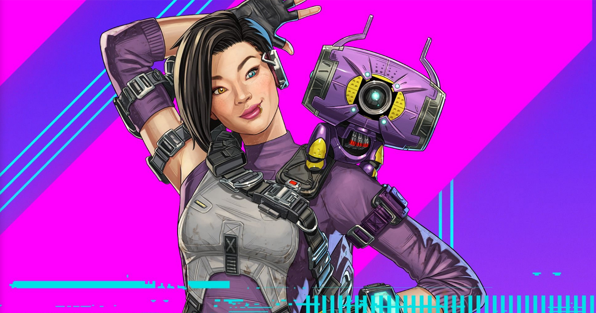
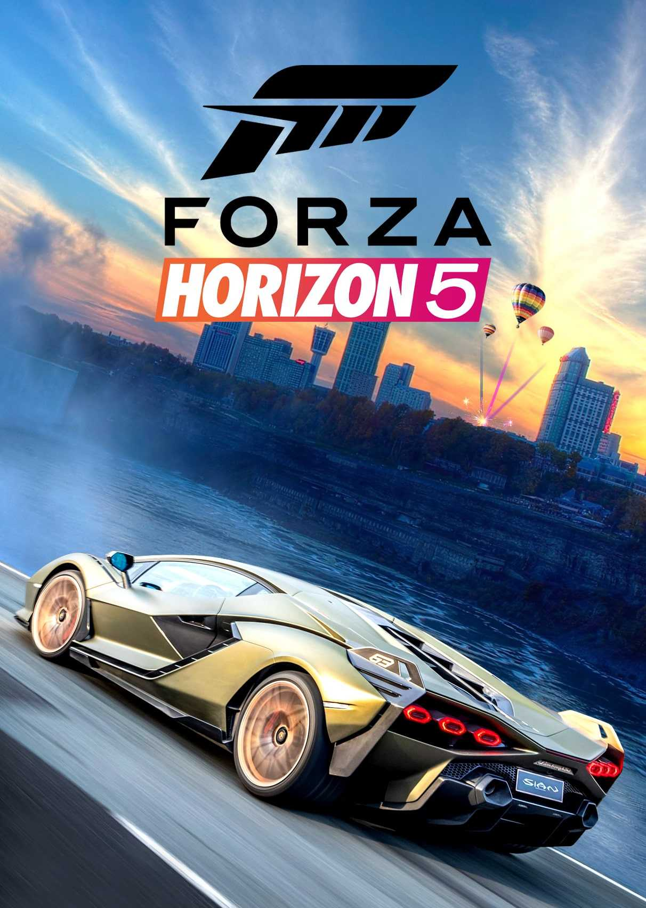
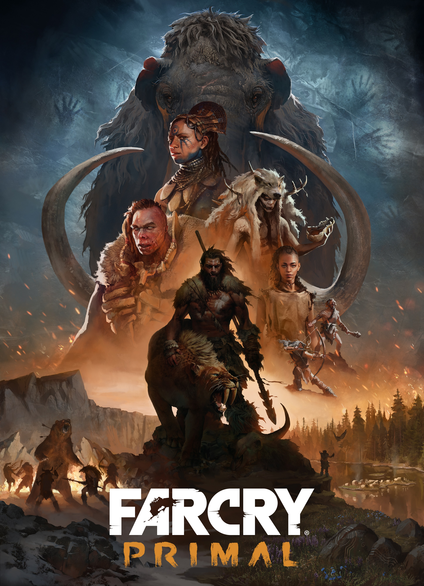
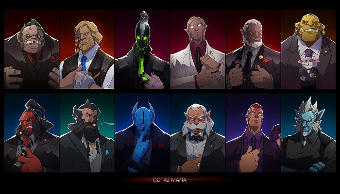

ɢᴏᴏᴅ ɢᴀᴍᴇ
1-Hᴏʀɪᴢᴏɴ Zᴇʀᴏ Dᴀᴡɴ

Horizon Zero Dawn is a 2017 action role-playing game developed by Guerrilla Games and published by Sony
Interactive Entertainment. The game was released for PlayStation 4 in 2017 and Windows in 2020.
Horizon Zero Dawn is the first game of the Horizon video game series. The plot follows Aloy, a young hunter in a
world overrun by machines, who sets out to uncover her past. The player uses ranged weapons, a spear, and
stealth to combat mechanical creatures and other enemy forces. A skill tree provides the player with new
abilities and bonuses. The player can explore the open world to discover locations and take on side quests.
2-𝐆𝐎𝐃 𝐎𝐅 𝐖𝐀𝐑𝐄

God of War is an action-adventure game franchise created by David Jaffe at Sony's Santa Monica Studio. It began
in 2005 on the PlayStation 2 (PS2) video game console and has become a flagship series for PlayStation,
consisting of nine installments across multiple platforms. Based on ancient mythologies, the story follows
Kratos, a Spartan warrior and later the Greek God of War, who was tricked into killing his family by his former
master, the original Greek God of War Ares. This sets off a series of events that leads to wars with the
different mythological pantheons. The Greek-based games see Kratos follow a path of vengeance due to the
machinations of the Olympian gods, while the Norse-based games, which introduced his son Atreus as a secondary
protagonist, show an older Kratos on a path of redemption and inadvertently coming into conflict with the Norse
gods.
3-𝗧𝗛𝗘 𝗟𝗔𝗦𝗧 𝗢𝗙 𝗨𝗦

The Last of Us is an American post-apocalyptic drama television series created by Craig Mazin and Neil Druckmann
for HBO. Based on the 2013 video game developed by Naughty Dog, the series is set twenty years into a pandemic
caused by a mass fungal infection, which causes its hosts to transform into zombie-like creatures and collapses
society. The series follows Joel (Pedro Pascal), a smuggler tasked with escorting the immune teenager Ellie
(Bella Ramsey) across a post-apocalyptic United States.
Guest stars include Nico Parker as Joel's daughter Sarah, Merle Dandridge as resistance leader Marlene, Anna
Torv as Joel's partner Tess, Gabriel Luna as Joel's brother Tommy, Lamar Johnson and Keivonn Montreal Woodard as
brothers Henry and Sam, and Melanie Lynskey and Jeffrey Pierce as resistance leader Kathleen and her
second-in-command Perry.
4-𝐏𝐔𝐁𝐆

PUBG: Battlegrounds (previously known as PlayerUnknown's Battlegrounds) is a battle royale game developed by
PUBG Studios and published by Krafton. The game, which was inspired by the Japanese film Battle Royale (2000),
is based on previous mods created by Brendan "PlayerUnknown" Greene for other games, and expanded into a
standalone game under Greene's creative direction. It is the first game in the PUBG Universe series.
5-FIFA𝟷𝟾

FIFA 18 is a football simulation video game developed and published by Electronic Arts and released worldwide on
29 September 2017 for Microsoft Windows, PlayStation 3, PlayStation 4, Xbox 360, Xbox One and Nintendo Switch.
It is the 25th installment in the FIFA series. Portuguese footballer Cristiano Ronaldo, at the time contracted
to Real Madrid, appears as the cover athlete of the regular edition, as well as the alternate covers of the Icon
and 2018 FIFA World Cup editions of the game.[2]
6-𝕲𝕿𝖁

Grand Theft Auto V is a 2013 action-adventure game developed by Rockstar North and published by Rockstar Games.
It is the seventh main entry in the Grand Theft Auto series, following 2008's Grand Theft Auto IV, and the
fifteenth instalment overall. Set within the fictional state of San Andreas, based on Southern California, the
single-player story follows three protagonists—retired bank robber Michael De Santa, street gangster Franklin
Clinton, and drug dealer and gunrunner Trevor Philips—and their attempts to commit heists while under pressure
from a corrupt government agency and powerful criminals. The open world design lets players freely roam San
Andreas's open countryside and the fictional city of Los Santos, based on Los Angeles.
7-Apex

Apex Legends is a free-to-play battle royale-hero shooter game developed by Respawn Entertainment and published
by Electronic Arts. It was released for PlayStation 4, Windows, and Xbox One in February 2019, for Nintendo
Switch in March 2021, and for PlayStation 5 and Xbox Series X/S in March 2022. A mobile version of the game
designed for touchscreens titled Apex Legends Mobile was released in May 2022 on Android and iOS. The game
supports cross-platform play, excluding the aforementioned mobile platforms.
8-FORZA Horizon5

Forza Horizon is a 2012 racing video game developed by Playground Games and published by Microsoft Studios for
the Xbox 360 on 23 October 2012. The game is the fifth instalment of the Forza series, having originally
spun-off from Turn 10 Studios-developed Forza Motorsport titles. Taking place during the fictitious Horizon
Festival, a street racing event, the player's aim is to progress via winning races, while also increasing their
popularity level by performing stunts and activities. Unlike previous games in the Forza series, Forza Horizon
takes place in an open world that players can explore.
9-FAR CRY PRIMAL

Far Cry Primal is a 2016 action-adventure game developed by Ubisoft Montreal and published by Ubisoft. It is a
spin-off to Far Cry 4, and the tenth overall installment in the Far Cry series. Set during prehistoric times,
the game follows the story of Takkar, who starts off as an unarmed hunter but will rise to become the leader of
a tribe, using his special gift of taming animals. Primal adapts the traditional Far Cry formula to its
prehistoric setting, replacing modern firearms with primitive weapons like spears, clubs, and bows and arrows,
and allowing players to summon animal companions during battles. Everyday survival is a key aspect of the
gameplay, as players have to watch out for both natural predators and rival tribesmen.
10-D o t a 2

dota 2 is best
(evre game is good)
company arik